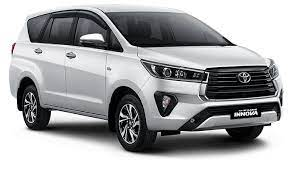
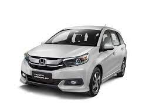

Sewa Mobil di Bali, Bali Tour Services, Rental Mobil Di Bali Murah pengalaman lebih dari 11 tahun di bidang Rental Mobil di bali dan bali tour services. Keamanan dan kenyamanan adalah proritas kami, maka harga rent car / sewa mobil sudah termasuk ansuransi all risk. Anda juga bisa menggunakan jasa driver untuk bisnis atau liburan di Bali, mengapa kami menawarkan jasa driver untuk anda karena bisa juga berfungsi sebagai guide di dalam perjalanan anda. Disamping itu semua driver rental mobil kami mengetahui daerah wisata di Bali, kuta, legian, sanur, nusadua, ubud, jimbaran.
sebelum memilih jasa Rental Mobil Bali. bali sewa mobil merupakan jasa Rental Mobil Murah di Bali dengan pelayanan terbaik dan profesional. Kami mengandalkan layanan Sewa Mobil Murah Di Bali yang ramah dan direkomendasikan untuk Anda. Selain itu kami juga menyediakan Sewa Mobil Lepas Kunci Murah dengan beragam jenis mobil yang tersedia.
Pengalaman kami dalam dunia tour dan travel di Bali,dan Sewa Mobil Bali membuat kami percaya jika tour Bali anda bersama kami pasti akan menyenangkan. Impian Anda tentang perjalanan ke pulau Bali akan menjadi pengalaman nyata..
Terima kasih telah mengunjungi website & layanan kami.
Toyoya Grand Avanza Automatic 1.300 ccHarga:Rp. 200.000 - Rp. 250.000Harga dengan sopir: Rp. 300.000, Per 8-10 jam belum termasuk bensin Kapasitas: 7 orang 2 anak dengan 2 tas kecil Bahan Bakar: 1.5 L / 10 km |

Kijang Innova Reborn Automatic 2000 ccHarga:Rp. 450.000Harga dengan sopir:RP. 450.000, per 8-10 jam belum termasuk bensin Kapasitas: 6 orang dewasa, 2 anak dengan 2 tas kecil Bahan Bakar: 1.5 L / 10 km |

Honda Mobilio Automatic 1.500 ccHarga:Rp. 300.000 - Rp. 350.000Harga dengan sopir:RP. 450.000, per 8-10 jam belum termasuk bensin Kapasitas: 6 orang dewasa, 1 anak dengan 2 tas kecil Bahan Bakar: 1.0 L / 10 km |